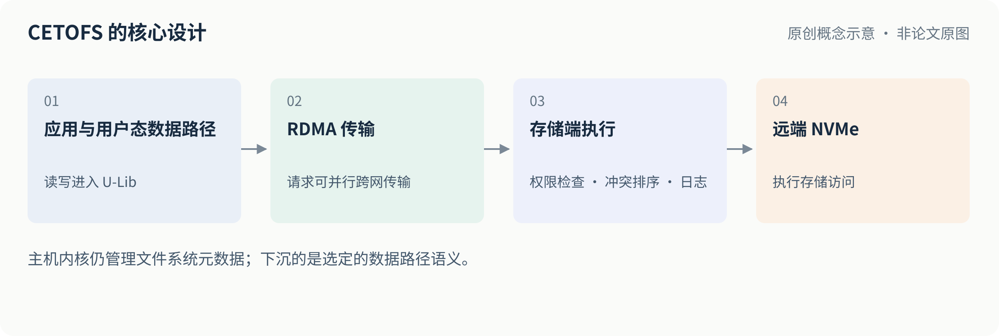
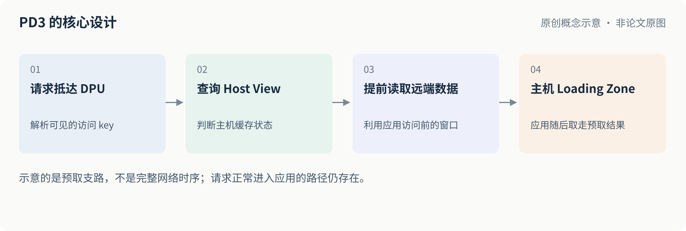
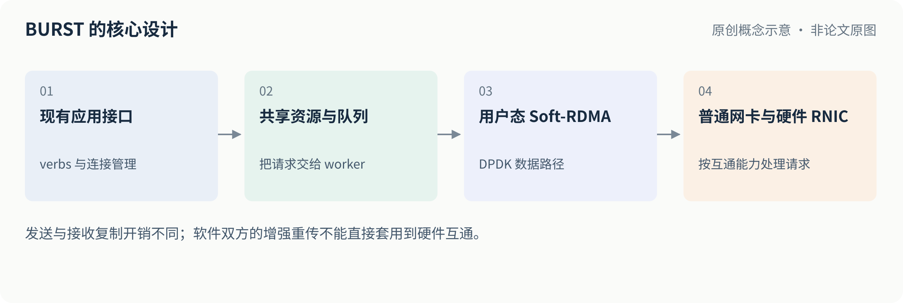
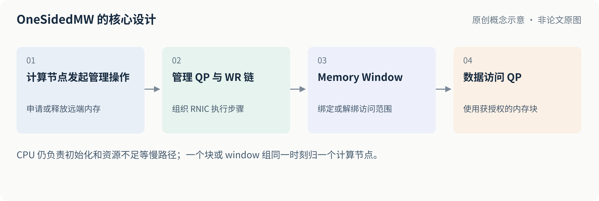
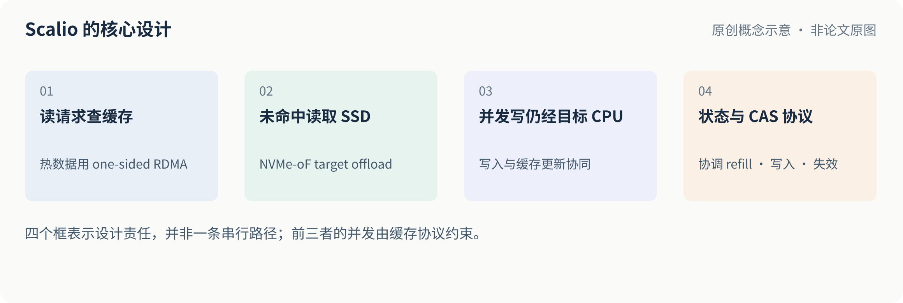

← 两期归档首页这期沿着分布式存储请求的五个瓶颈层次展开：文件系统到远端 SSD 的路径、缓存 miss 处理、软件 RDMA 的 CPU 与尾延迟、远端内存分配与隔离，以及缓存和 SSD 并发更新的一致性。
这是对应日期早报的整理归档，并非当日新发表论文列表。技术正文保持原早报的结论与限制；补充的图解和验证清单属于原创说明与工程建议。所有性能数字均来自作者特定测试条件下的报告，不能直接跨论文排名。本地图片和页面可离线阅读，原文与仓库外链需要联网。
FAST 2026 · 论文 1 / 5
01
CETOFS：重新设计文件系统到远端 NVMe 的数据路径
问题：远端 NVMe 本身很快，但沿用传统文件系统路径时，权限检查、并发排序和日志等工作可能成为瓶颈。
机制：主机保留文件系统元数据管理，将数据读写移到用户态；存储端参与块级权限检查、冲突请求排序和 redo log。请求可以并行跨网传输，再由目标端维持冲突操作的顺序。
证据与局限：在两台服务器、ConnectX-5、单块 Optane P4800X、全部使用 O_DIRECT 的环境中，Filebench Fileserver 平均吞吐相对 Ext4、F2FS 和作者扩展的远程 uFS 分别高 75%、72%、64%。摘要中的 19× 是特定并发微基准的最高值，不是普遍业务收益。论文采用多读或独占写的共享模型，多 initiator、多 target 等仍属未来工作。
对存储研发的启发：先把元数据、权限、顺序、日志和数据搬运画成完整路径，再决定哪些语义适合下沉到存储端。它提供的是设计参考，不能直接等同于已经支持任意多客户端并发写的分布式文件系统。

原创图解，不是论文原图。沿着数据流找权限、顺序与持久化的责任边界，再决定哪些步骤适合下沉。
依据：图5（PDF第6页）；图13（PDF第12页）。主机内核仍管理文件系统元数据；下沉的是选定的数据路径语义。原文图阅读指南
工程验证清单
- 分别测元数据与数据路径的 CPU 和网络成本。
- 覆盖共享文件、并发冲突、崩溃及恢复语义。
- 将单 SSD、O_DIRECT 的实验条件与实际部署逐项比较。
公开归档范围：未核实论文、幻灯片和论文原图的第三方公开再分发许可，因此本包保留来源链接与原创解读，不重发原件。代码另按其逐项许可处理。
NSDI 2026 · 论文 2 / 5
02
PD3：利用请求到达与实际访问之间的时间，提前拉取数据
问题：即使 RDMA 很快，应用发现缓存 miss、构造请求、轮询和安装数据仍可能消耗大量 CPU 时间。
机制：DPU 在请求抵达 DPU 时尽早解析 key，查询主机缓存状态，提前从远端取回可能马上要访问的数据。它主要利用的是请求已暴露的访问内容，而不是单纯预测访问局部性。
证据与局限：在 BlueField-3、200Gbps 的 hashmap 实验中，10 亿 key、95% 读／5% 写、均匀访问条件下，吞吐相对 Redy 约为 2.2 倍；4KB page-server 实验相对 Redy 提升约 33%。不同工作负载收益差异明显。方案要求请求可以解析出访问 key，并需修改应用；它不是透明缓存，也没有证明完整持久化或故障恢复。
对存储研发的启发：对 KV、元数据服务或远端 page cache，可先分解 miss 路径的 CPU 时间，并测量“请求到达”与“真正访问数据”之间是否有足够预取窗口；再测写比例、突发请求和预取区域容量的影响。

原创图解，不是论文原图。关键资源是提前量，而不只是 RDMA 带宽；先测请求进入与真正访问之间的时间。
依据：图3（PDF第5页）；图10（PDF第11页）。示意的是预取支路，不是完整网络时序；请求正常进入应用的路径仍存在。原文图阅读指南
工程验证清单
- 测可解析请求比例、提前量和预取准确性。
- 覆盖读写比例变化、突发流量与预取区容量。
- 单独计入 DPU 处理、主机消费和失效维护的成本。
公开归档范围：未核实论文、幻灯片和论文原图的第三方公开再分发许可，因此本包保留来源链接与原创解读，不重发原件。代码另按其逐项许可处理。
NSDI 2026 · 论文 3 / 5
03
BURST：让普通网卡参与 RDMA 集群通信
问题：分布式存储集群可能同时有普通以太网卡和硬件 RNIC。软件 RDMA 若过慢，会影响异构节点互通和部署成本。
机制：BURST 实现用户态 Soft-RDMA，兼容 verbs／连接管理接口，通过共享内存、worker 队列和 DPDK 处理数据。发送路径尽量避免复制；接收路径仍有复制，可以借助 DSA 卸载。
证据与局限：在作者的企业分布式文件系统 GetAttr 测试中，相对内核 TCP，平均端到端延迟从 52.4 降到 37.6 微秒，P99.9 从 747 降到 393 微秒。这是元数据请求结果，不代表完整文件读写负载；论文未披露该测试的完整集群规模。硬件互通默认使用 Go-Back-N，不能把软件栈双方之间的增强重传能力直接推广到混合场景。
对存储研发的启发：评估异构网卡方案时，除总带宽外，应一起看小 RPC 的 P99／P99.9、CPU 核数、丢包恢复和硬件 RNIC 互通。论文的 400G 微基准使用多个 QP 与批处理，不能当成单 QP 数据。

原创图解，不是论文原图。异构节点的价值要用小 RPC 的尾延迟、CPU 消耗和丢包恢复共同衡量。
依据：图5（PDF第6页）；表1（PDF第12页）。发送与接收复制开销不同；软件双方的增强重传不能直接套用到硬件互通。原文图阅读指南
工程验证清单
- 分别测试软件对软件、软件对 RNIC 的互通。
- 同时记录 QP 数量、批大小、CPU 核数和尾延迟。
- 不要用元数据 GetAttr 结果替代文件读写负载。
公开归档范围：未核实论文、幻灯片和论文原图的第三方公开再分发许可，因此本包保留来源链接与原创解读，不重发原件。代码另按其逐项许可处理。
NSDI 2026 · 论文 4 / 5
04
OneSidedMW：减少远端内存分配对内存节点 CPU 的依赖
问题：单边 RDMA 可以绕过远端 CPU 访问数据，但远端内存的动态分配、回收和访问隔离仍可能依赖 RPC；预分配大块内存则可能浪费空间。
机制：利用 RNIC 执行 type-2 memory window 的绑定／解绑 work-request 链，将正常分配与释放路径中的部分管理工作从内存节点 CPU 移开，并分离管理 QP 和访问 QP。
证据与局限：在 1 个内存节点、6 个计算节点、100Gbps ConnectX-5 InfiniBand 的测试中，4KB 分配相比 RPC 管理方案最高获得 10.6 倍吞吐。但它的峰值吞吐只有粗粒度静态预分配的 63.8%，换来约 65.6% 的内存用量下降，是空间与吞吐的折中。一个内存块／window 组同一时刻只归一个计算节点，初始化和资源不足等情况仍需 CPU 参与。
对存储研发的启发：适合参考远端缓存或 KV 内存池的管理方式。评价时应同时画出吞吐、尾延迟、碎片率与隔离成本；论文使用 InfiniBand，RoCE 环境需要单独验证。

原创图解，不是论文原图。减少管理 CPU 负担的同时，检查细粒度分配对吞吐、空间利用率和隔离的影响。
依据：图3（PDF第6页）；图6（PDF第10页）。CPU 仍负责初始化和资源不足等慢路径；一个块或 window 组同一时刻归一个计算节点。原文图阅读指南
工程验证清单
- 同时画吞吐、P99、内存占用与碎片曲线。
- 测试初始化、资源耗尽和回收慢路径。
- RoCE 部署需要独立验证，不能直接套用 InfiniBand 结果。
公开归档范围：未核实论文、幻灯片和论文原图的第三方公开再分发许可，因此本包保留来源链接与原创解读，不重发原件。代码另按其逐项许可处理。
OSDI 2025 · 论文 5 / 5
05
Scalio：加 RDMA 缓存之前，先解决缓存与 SSD 的一致性
问题：JBOF 的 SSD 增多后，目标端 CPU 可能先到瓶颈。增加 RDMA 热缓存可以缓解读开销，但缓存填充与并发写入会产生一致性竞态。
机制：热读使用 one-sided RDMA 访问缓存；未命中时利用 NVMe-oF target offload 读取 SSD，写入仍经目标端 CPU。缓存项通过状态和 CAS 协调填充、写入及失效，避免并发操作让读者看到倒退版本。
证据与局限：在论文的 YCSB 小 KV 测试中，吞吐相对 LEED+Ditto 约为 1.8–3.3 倍；批量写虽提高吞吐，也增加延迟。主要评测用限制为 8 核、8GB 的 Intel Xeon 模拟 DPU 资源预算，不是在真实 ARM DPU 上完成，因此不能直接外推到真实 DPU 性能或能效。论文也不等于验证了完整跨节点复制和高可用。
对存储研发的启发：最值得借鉴的是 refill、写入、失效并发时的状态机。落地还应加入客户端暂停、恢复、持久化与 P99 测试，而不只比较平均吞吐。

原创图解，不是论文原图。缓存一致性协议比“再加一层缓存”更值得迁移；先把并发状态与失败窗口写清楚。
依据：图9（PDF第8页）；图11（PDF第11页）。四个框表示设计责任，并非一条串行路径；前三者的并发由缓存协议约束。原文图阅读指南
工程验证清单
- 使用真实后端测 refill 与并发写的版本一致性。
- 覆盖客户端暂停、恢复和持久化边界。
- 主要评测用 Xeon 限制资源模拟 DPU，真实 ARM DPU 需另测。
公开归档范围：未核实论文、幻灯片和论文原图的第三方公开再分发许可，因此本包保留来源链接与原创解读，不重发原件。代码另按其逐项许可处理。
如何继续阅读
建议先读 CETOFS 理解文件系统到远端设备的完整路径，再读 Scalio 的缓存一致性。若重点是元数据 RPC 或异构网卡，优先补读 BURST。
把论文中的收益映射回自己的系统时，建议先画出请求路径和正确性边界，再确定基线、硬件、并发度、工作负载和故障模型。单项吞吐或延迟数字不等于生产环境的整体收益。